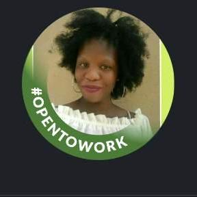

About Me
Hello! My name is Tinny Mosimanyana, a passionate freelance web developer based in Botswana. With several years of experience in web design and development, I specialize in creating responsive, user-friendly websites for clients across various industries. My goal is to help businesses establish a strong online presence through custom website solutions. I am dedicated to continuous learning and staying updated with the latest web technologies to deliver high-quality work. Explore my portfolio to see the projects I've worked on and learn more about the services I offer.
About Botswana
Botswana is a landlocked country in Southern Africa. It is known for its diverse ecosystems, including the Okavango Delta, which becomes a lush animal habitat during the seasonal floods. Botswana is also known for its diamond mines and wildlife safaris.